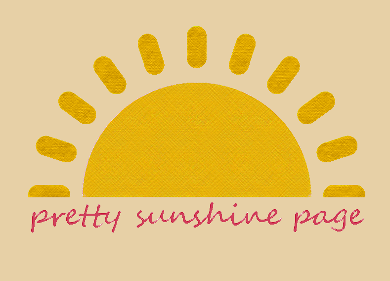

Pretty Sunshine Page Logo
This is a colorful and youthful content page or busniess logo. The logo is full of color and vibrance makiing the brand seem fun and exciting. This logo was made using Adobe Illustrator.
This is a colorful and youthful content page or busniess logo. The logo is full of color and vibrance makiing the brand seem fun and exciting. This logo was made using Adobe Illustrator.
This is a graphic personal avatar perfect for a personal portfolio, webpage, or social media. This was created using Adobe Illustrator.
This is a clean cut favicon of a waffle, used in documents, on webpages, or in product production. This was created using Abode Illustrator.
This is a line style favicon, used in documents, webpages, or in product production. This was made using Adobe Illustrator.
This is a project in which I assisted with the web development, ux/ui development, and graphic art. This project involved HTML, CSS, Javascript, and Adobe Illustrator.
This is a hand drawn art piece of a beautiful city at night. This piece was drawn to invoke a feeling of calm and serenity. This piece was created using Procreate.
This is a hand drawn art piece of the planet Saturn. This piece was created using Procreate.
This is a hand drawn art piece of a pond landscape including a water lily, lily pads, and the pond. This piece was created with Procreate.